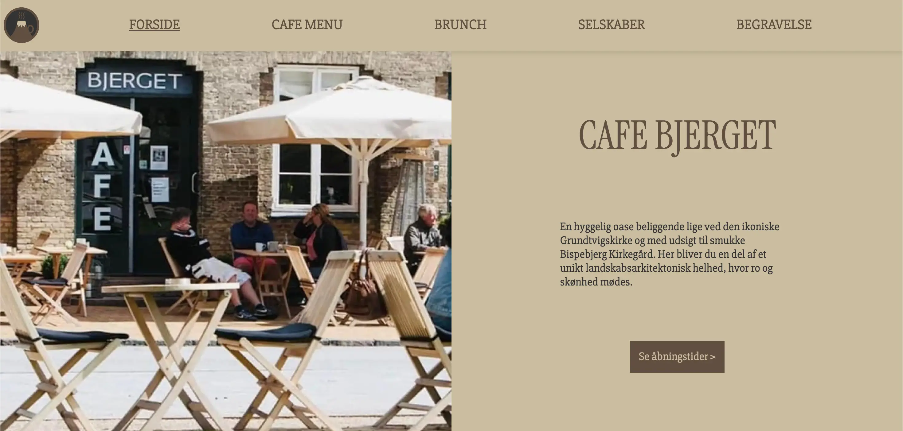

05 — indhold
05 — indhold
I vores sidste tema for dette semester blev vi sat i grupper for at lære om indhold på hjemmesider. Grupperne bestod af fire personer, og vi blev opdelt i mindre teams til at løse opgaver – først to og to, derefter i fællesskab som en samlet gruppe.
passionssite
passionssite
Tema og opgave
Den første opgave gik ud på at finde en person med en passion og lave et videointerview med denne person. Videoen skulle klippes og redigeres, og vi skulle derefter kode en hjemmeside dedikeret til den færdige video. Min gruppe og jeg tog udgangspunkt i min veninde Parnoosh Zamani, som brænder for bæredygtig mode.
I undervisningen lærte vi at håndtere videomateriale og at arbejde med Adobe Premiere Pro til at sammensætte lyd og billede til et fuldendt videointerview. Vi brugte også Adobe Audition til at beskære og rense lydfiler. Desuden blev vi introduceret til Lottiefiles, som vi anvendte til animationer i hero-sektionerne på vores passionssites.
Konklusion og refleksion
Videoredigering er ikke nyt for mig, da jeg normalt arbejder i Final Cut Pro, som er lidt anderledes end Premiere Pro. Trods forskellene lykkedes jeg med at skabe et resultat, som jeg er meget tilfreds med.
Mit projekt Vintage Visions kan tilgås her
virksomhedssite
virksomhedssite
Tema og Opgave
Den næste opgave var en fælles gruppeopgave, hvor vi skulle finde en virksomhed, som kunne have gavn af en digital opgradering af deres hjemmeside. En fra gruppen kendte til Café Bjerget i Nordvest, og vi besluttede at arbejde med deres side.
Café Bjerget ønskede en ny hjemmeside, der både kunne afspejle deres luksuriøse smørrebrød og fastholde et professionelt udtryk. Dette var særligt vigtigt, da caféen også fungerer som ceremonilokale for begravelser, eftersom den ligger foran Grundtvigs Kirke.
Vi arbejdede med idégenerering i et fælles Figma-dokument og kodede hjemmesiden sammen via GitHub i Visual Studio Code. For at evaluere forbedringerne og brugervenligheden foretog vi en Likert-test af deres hjemmeside før og efter opgraderingen.
Konklusion og Refleksion
Det har været udfordrende at arbejde i et team, hvor alle havde forskellige stilarter og æstetiske præferencer. Det krævede kompromiser, men processen har været en spændende og lærerig oplevelse, og vi er tilfredse med det endelige resultat.
